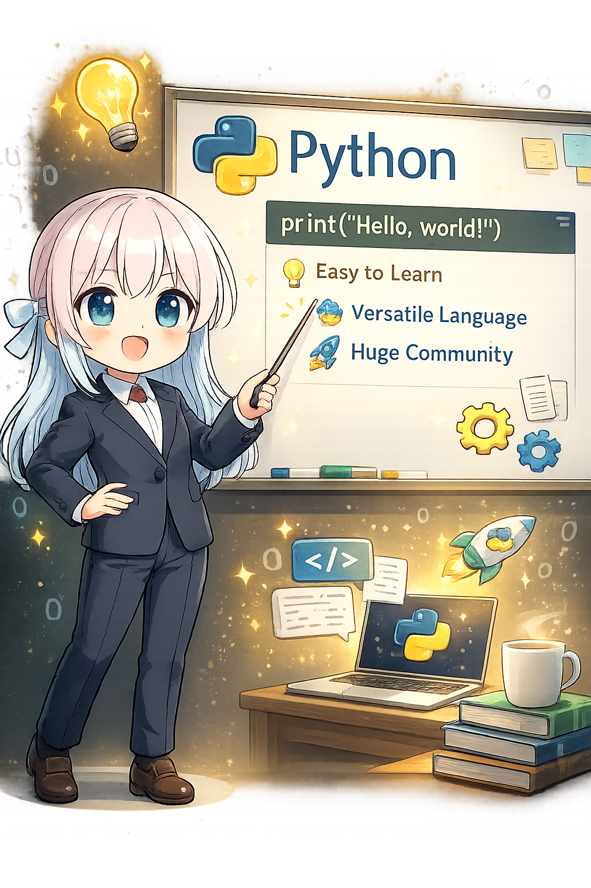

このコースは、Python の文法を先に全部覚えるためのものではありません。「GPU でやりたいこと」を一つずつ進めながら、必要な Python をその都度拾っていくスタイルです。
✨ はじめての方へ: まずは GPU で 1 回計算を動かしてみましょう。
Quickstart — まず動かす →Quickstart が終わったら、第0章で環境の意味を理解しましょう。Quickstart で選んだルート（ネイティブ or Docker）をそのまま続けてください。
まずは ROCm と PyTorch から GPU が見えているかを確かめます。
NumPy の配列を「数字の表」として読めるようになります。
行列の掛け算を shape といっしょに読めるようにします。
NumPy の表が PyTorch の tensor にどうつながるかを見ます。
CPU と GPU の置き場所の違いを、.to(device) からつかみます。
model(x) という一行が何をしているのかを読めるようにします。
学習はせず、答えを出すだけの流れを見ます。
loss と backward() と step() がどうつながるかを体験します。
「使うだけでは学習しない」を、自分の言葉で説明できるようにします。
Conv2d と画像っぽい shape を、コードの中で追ってみます。
Q、K、V や softmax を、形と流れで見ていきます。
shape mismatch やログを見て、どこで止まったかを追えるようにします。
短い実験コードを、最初から最後まで自分で追えるところまで進みます。
読みながら引っかかった言葉をすぐ戻って確かめたいときは、Appendix A: 困ったときの補足集 も使えます。
13章を終えたら、次はコードを自分で組み立てる段階へ。GPU ベンチマーク・実験ログ保存・関数化・モデルクラスの作成など、ROCm の実験文脈で Python の残りの道具を拾っていきます。
全部を一気に読む必要はありません。今の自分に近い章から入って、必要になったら前の章へ戻る読み方でも大丈夫です。